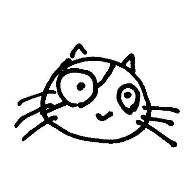

杉山 駿 (Shun Sugiyama)
sugiyamath / sugishun
Pythonプログラマー。個人ページ、作品、自作オンラインツールをここに置いています。

略歴
1990年、静岡県御殿場市生まれ。
- 御殿場市立富士岡小学校
- 御殿場市立富士岡中学校
- 静岡県立小山高等学校 (前半)
- ウィッツ青山学園高等学校 (後半)
- 京都コンピュータ学院 中退
統合失調症による錯乱等の困難を抱えながら京都コンピュータ学院へ入学しましたが、病状の悪化と経済的理由により中退を余儀なくされました。
その後、数学教師、交通誘導警備員、複合機品質テスター、Webプログラマーなどの職を転々とし、現在は小規模な企業にてPythonプログラマーとして従事しています。
関心事
- 趣味: ゲーム、読書、ネットサーフィン
- バケットリスト: bucketlist.html
連絡先・アカウント
- mail: arming-roman-apply@duck.com
- social: social.html
作品
- my_sora_backup: YouTube Channel
- AI Music: SoundCloud
- Art: art.html